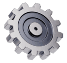

Inicio

¡Bienvenidos al curso de Mecanismos para 1º ESO ! En este curso aprenderás cómo funcionan las máquinas que utilizamos en nuestra vida cotidiana, desde las más simples hasta las más complejos. Los mecanismos están en todas partes: en bicicletas, puertas automáticas, relojes, grúas y mucho más. Comprenderlos te ayudará no solo a saber cómo funcionan las cosas, sino también a diseñar e imaginar tus propias creaciones.
¿Qué aprenderás en este curso?
A lo largo de este curso, exploraremos los fundamentos de los mecanismos. Algunos de los temas principales que abordaremos incluyen:
- Máquinas simples: Aprende cómo trabajan las palancas, poleas, planos inclinados, tornillos, cuñas y ruedas.
- Transmisión de movimiento: Descubre cómo funcionan engranajes, correas y cadenas para transmitir energía y movimiento.
- Transformación de movimiento: Estudia cómo se transforma el movimiento lineal en circular y viceversa.
- Aplicaciones prácticas: Identifica cómo se utilizan los mecanismos en objetos y máquinas de uso cotidiano.
¿Por qué es importante aprender sobre mecanismos?
Los mecanismos son fundamentales en el diseño de máquinas y herramientas que hacen nuestra vida más fácil. Al aprender sobre ellos, desarrollarás habilidades para:
- Resolver problemas técnicos.
- Comprender cómo funcionan las herramientas y los dispositivos.
- Desarrollar tu creatividad para inventar y construir.
Además, este conocimiento te abrirá las puertas a áreas como la ingeniería, la robótica y el diseño industrial.
Metodología del curso
El curso combinará teoría y práctica. Algunas actividades clave serán:
- Clases teóricas: Introducción a conceptos básicos con ejemplos del mundo real.
- Talleres prácticos: Construcción de modelos de mecanismos simples.
- Proyectos grupales: Diseño y construcción de mecanismos creativos para resolver problemas específicos.
- Evaluaciones divertidas: Cuestionarios interactivos y desafíos prácticos para demostrar lo aprendido.
Objetivos del curso
Al final del curso, serás capaz de:
- Identificar y describir los principales tipos de mecanismos.
- Explicar cómo se transmiten y convierten los movimientos.
- Diseñar y construir modelos funcionales de mecanismos simples.
- Aplicar lo aprendido en situaciones prácticas y reales.
¡Comencemos!
Prepárate para sumergirte en el fascinante mundo de los mecanismos. Al final del curso, serás capaz de ver el mundo desde una nueva perspectiva, entendiendo cómo las cosas funcionan y cómo puedes crear tus propios inventos.
¡Manos a la obra! 🚀